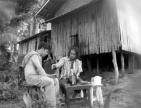

|
WALANG ALAALA ANG MGA PARU-PARO (Butterflies Have No Memories)
Lav Diaz | South Korea 2009 | 58 min.
Material: DV
Format: Mini-DV
Original language: Tagalog, English
Script: Lav Diaz
Camera: Lav Diaz
Editing: Lav Diaz
With Dante Perez, Kristine Kintana, Joel Ferrer, Willy Fernandez, Lois Goff, Edward Porta
Production: Lav Diaz
Print/Sales: Jeonju International Film Festival
On an island far from the main land of the Philippines, islanders who used to be wealthy go through economic difficulties when a goldmine company withdraws from the area. Ferding, Santos and Willy only drink in despair. One day, a Canadian woman’s visit changes everything.... Through the expression of the contradictory nature of the prosperity development brings and the environmental destruction it causes, the pain Philippine society experiences is fully captured.
The remote island of Marinduque in the Philippines provided the inspiration for this new work. Fifteen years ago, the mining company owned by Canadians closed down and it suddenly changed the fortunes of the inhabitants. Last December 2008, my production company went directly to the island not expecting anything. People talk about the past prosperity. Some wanted the mine back for the money. Others wanted it back but were very cautious to talk about it especially on the critical issues of environmental destruction. The story and script came naturally when I sat down to write it. I just did character studies, a straight story of ordinary people trapped in post-colonial issues, post-multinational prosperity discourse. – Lav Diaz
Lav Diaz, born in 1958. He studied Economics at the University of Notre Dame and studied in the Film Institute in Mowelfund, Manila. Having started his career with The Criminal of Marrio Concepcion(1998), he gained international reputation through his Philippines Trilogy: Batang West Side, Evolution of a Filipino Family, and Heremias. Death in the Land of Encantos(2007); running time 9-hrs was picked as Special Mention, and his latest film Melancholia(2008); running time 8-hrs, won Venice Horizons Award at Venice International Film Festival.
Films (selection): 2009 Butterflies have no Memories | 2008 Melancholia, Purgatorio | 2007 Death in the Land of Encantos | 2006 Heremias | 2004 Evolution of a Filipino Family (UNDERDOX 01) | 2002 Batang West Side | 1999 Burger Boys | 1998 The Criminal of Barrio Concepcion
back
|